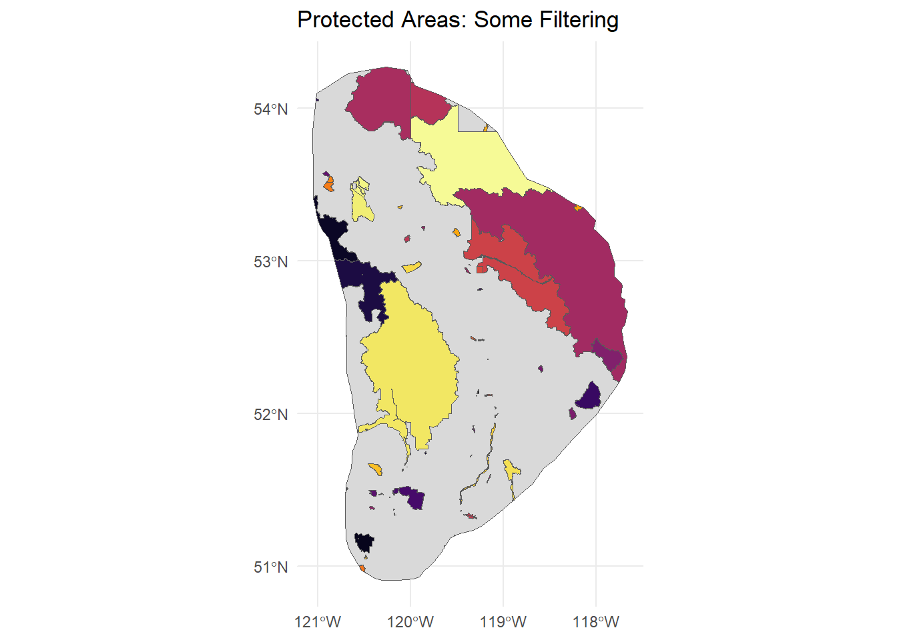
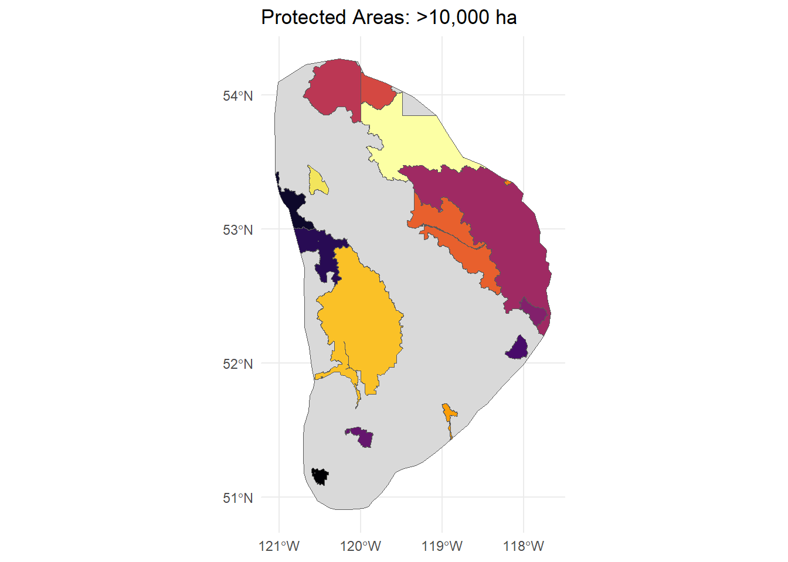

Important Note: This data included Old Growth Managment Areas and Wildlife Habitat Areas. As these are not proper protected areas, I removed them from analysis. These areas took up most of Simpcw Territory and did not leave much for areas outside of protected areas. As the focus was on parks, removing these provided a more fair analysis of protected areas within Simpcw territory.
The maps below show three versions of the protected areas data to illustrate the impact of this filtering.
2.2 Data inputs
Protected Area Data: ProtectedConservedArea_2024.gdb using the layer ProtectedConservedArea_2024
Reading layer `SFN_TT' from data source `E:\Matt and Mia\Spatial Data\doc.kml' using driver `KML'
Simple feature collection with 1 feature and 2 fields
Geometry type: POLYGON
Dimension: XYZ
Bounding box: xmin: -121.0515 ymin: 50.90655 xmax: -117.6642 ymax: 54.2691
z_range: zmin: 0 zmax: 0
Geodetic CRS: WGS 84
# Read in protected and conserved area datadata <-st_read("Spatial Data/ProtectedConservedArea_2024/ProtectedConservedArea_2024.gdb", layer="ProtectedConservedArea_2024") %>%st_transform(st_crs(data_sf))
Reading layer `ProtectedConservedArea_2024' from data source
`E:\Matt and Mia\Spatial Data\ProtectedConservedArea_2024\ProtectedConservedArea_2024.gdb'
using driver `OpenFileGDB'
Simple feature collection with 20430 features and 36 fields
Geometry type: GEOMETRY
Dimension: XY
Bounding box: xmin: -2652801 ymin: 293896.6 xmax: 3379443 ymax: 5056862
Projected CRS: Canada_Albers_Equal_Area_Conic
2.4 Filtering and cleaning workflow
Protected areas were filtered to include only:
Areas in BC and AB
Federal, Provincial, Municipal, and Indigenous protected areas
# Filter for AB and BC# Filter Federal, Provincial, Municipal, and Indigenous protected areasdata_filtered <- data %>%filter(LOC =="1"| LOC =="2") %>%filter(OWNER_TYPE =="1"| OWNER_TYPE =="2"| OWNER_TYPE =="3"| OWNER_TYPE =="4")# Crop protected areas to Simpcw territorycropped_data <-st_intersection(data_filtered, data_sf) %>%select(NAME_E, OWNER_E, GOV_TYPE, O_AREA_HA, Shape_Area)# Savest_write(cropped_data, "Outputs/cropped_all.gpkg")
2.5 Visualization of different levels of filtering
# Load data and make validcropped_data <-st_read("Outputs/cropped_all.gpkg") %>%st_make_valid()
Reading layer `cropped_all' from data source
`E:\Matt and Mia\Outputs\cropped_all.gpkg' using driver `GPKG'
Simple feature collection with 65 features and 5 fields
Geometry type: MULTIPOLYGON
Dimension: XY
Bounding box: xmin: -1684017 ymin: 1494777 xmax: -1429148 ymax: 1856355
Projected CRS: Canada_Albers_Equal_Area_Conic
1) Unfiltered Data (Includes Old Growth & Wildlife Habitat Areas)
This dataset includes Old Growth Management Areas and Wildlife Habitat Areas. These are not formal protected areas and cover much of Simpcw Territory, which would skew analyses of how bird observations fall inside vs. outside protected areas. Therefore, these two area types were removed for the primary analysis.
# Plot with no filters applied ggplot() +geom_sf(data = data_sf, fill ="grey85") +geom_sf(data = cropped_data, aes(fill = NAME_E), show.legend =FALSE) +# hides legendtheme_minimal() +ggtitle("Protected Areas: All Data") +scale_fill_viridis_d(option ="B" ) +scale_x_continuous(breaks =seq(-122, -110, by =1)) +# every 5 on x-axisscale_y_continuous(breaks =seq(50, 54, by =1))
kable(matrix(unique(cropped_data$NAME_E), ncol =3, byrow =TRUE), col.names =NULL,caption ="All Protected Areas Within Simpcw Territory")
All Protected Areas Within Simpcw Territory
Kakwa Wildland Provincial Park
Willmore Wilderness Park
Rock Lake - Solomon Creek Wildland Provincial Park
Sulphur Gates Provincial Recreation Area
MOUNT ROBSON PARK
WELLS GRAY PARK
HAMBER PARK
BRIDGE LAKE PARK
BOWRON LAKE PARK
NORTH THOMPSON RIVER PARK
MOUNT TERRY FOX PARK
KAKWA PARK
REARGUARD FALLS PARK
CLOSE-TO-THE-EDGE PARK
ERG MOUNTAIN PARK
SMALL RIVER CAVES PARK
UPPER SEYMOUR RIVER PARK
MOUNT ROBSON CORRIDOR PROTECTED AREA
QUESNEL LAKE PARK
CRANBERRY MARSH/STARRATT WILDLIFE MANAGEMENT AREA
SUNBEAM CREEK ECOLOGICAL RESERVE
GOOSEGRASS CREEK ECOLOGICAL RESERVE
FINN CREEK PROTECTED AREA
CUMMINS RIVER PROTECTED AREA
PTARMIGAN PROTECTED AREA
WEST TWIN PROTECTED AREA
MOUNT ROBSON PROTECTED AREA
KAKWA PROTECTED AREA
ADAMS LAKE MARINE PARK
FINN CREEK PARK
CHU CHUA COTTONWOOD PARK
PTARMIGAN CREEK PARK
WEST TWIN PARK
BONAPARTE PARK
DUNN PEAK PARK
CARIBOO MOUNTAINS PARK
CUMMINS LAKES PARK
HIGH LAKES BASIN PARK
EMAR LAKES PARK
MOMICH LAKES PARK
PORCUPINE MEADOWS PARK
TAWEEL PARK
UPPER ADAMS RIVER PARK
BLUE RIVER BLACK SPRUCE PARK
BLUE RIVER PINE PARK
CALIGATA LAKE PARK
EAKIN CREEK CANYON PARK
EAKIN CREEK FLOODPLAIN PARK
HARBOUR-DUDGEON LAKES PARK
MUD LAKE DELTA PARK
NORTH THOMPSON ISLANDS PARK
NORTH THOMPSON OXBOWS EAST PARK
NORTH THOMPSON OXBOWS MANTEAU PARK
OREGANA CREEK PARK
PYRAMID CREEK FALLS PARK
TSINTSUNKO LAKES PARK
WIRE CACHE PARK
FOSTER ARM PROTECTED AREA
HOLLIDAY CREEK ARCH PROTECTED AREA
JACKMAN FLATS PARK
LOWER RAUSH PROTECTED AREA
UPPER RAUSH PROTECTED AREA
Old Growth Management Areas (Mapped Legal)
Wildlife Habitat Areas
Jasper National Park Of Canada
Kakwa Wildland Provincial Park
2) Filtered Data (Used in Analysis)
Old Growth Management Areas and Wildlife Habitat Areas removed. Same table as above minus these two areas.
# Set names to remove and removeexcluded_names <-c("Old Growth Management Areas (Mapped Legal)", "Wildlife Habitat Areas")cropped_filtered <- cropped_data %>%filter(!(NAME_E %in% excluded_names))# Make validcropped_filtered <-st_make_valid(cropped_filtered)# Saveoutput_path <-"Outputs/cropped.gpkg"if (!file.exists(output_path)) {st_write(cropped_filtered, output_path)message("File written to: ", output_path)} else {message("File already exists. Not overwriting: ", output_path)}# Plot with some filters applied ggplot() +geom_sf(data = data_sf, fill ="grey85") +geom_sf(data = cropped_filtered, aes(fill = NAME_E), show.legend =FALSE) +# hides legendtheme_minimal() +ggtitle("Protected Areas: Some Filtering") +scale_fill_viridis_d(option ="B" ) +scale_x_continuous(breaks =seq(-122, -110, by =1)) +# every 5 on x-axisscale_y_continuous(breaks =seq(50, 54, by =1))

3) Filtered + Size Threshold (>10,000 ha / 100 km²)
This version excludes very small protected areas. Not used in final analysis, shown only for reference.
# Filter area to be greater than 10000 HAselected <- cropped_filtered %>%filter(O_AREA_HA >10000)# Plot with some filters applied ggplot() +geom_sf(data = data_sf, fill ="grey85") +geom_sf(data = selected, aes(fill = NAME_E), show.legend =FALSE) +# hides legendtheme_minimal() +ggtitle("Protected Areas: >10,000 ha") +scale_fill_viridis_d(option ="B" ) +scale_x_continuous(breaks =seq(-122, -110, by =1)) +# every 5 on x-axisscale_y_continuous(breaks =seq(50, 54, by =1))

List of Protected Areas >10000 HA
Kakwa Wildland Provincial Park
Willmore Wilderness Park
Rock Lake - Solomon Creek Wildland Provincial Park